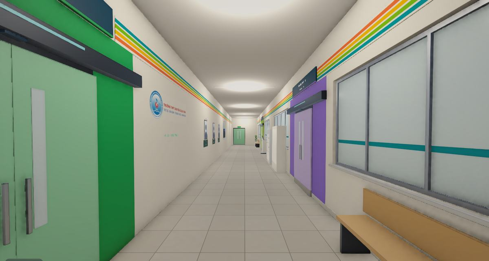
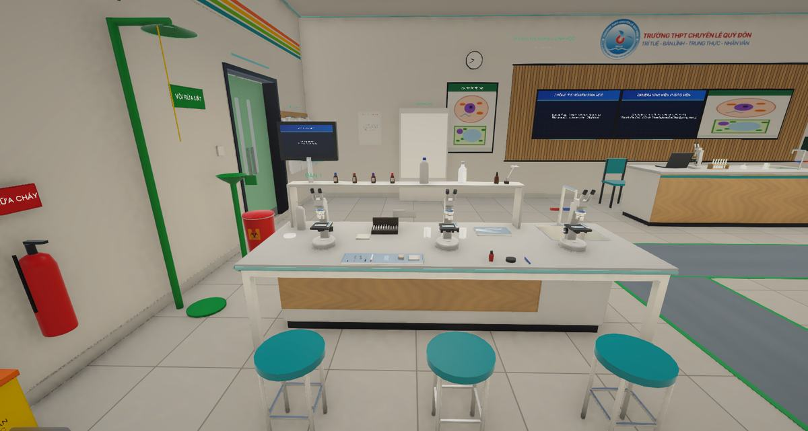
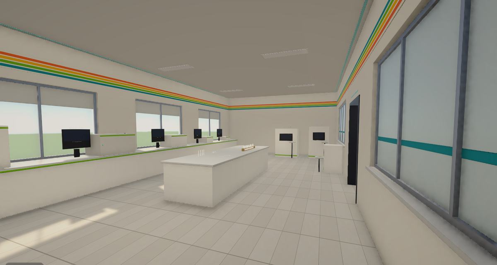
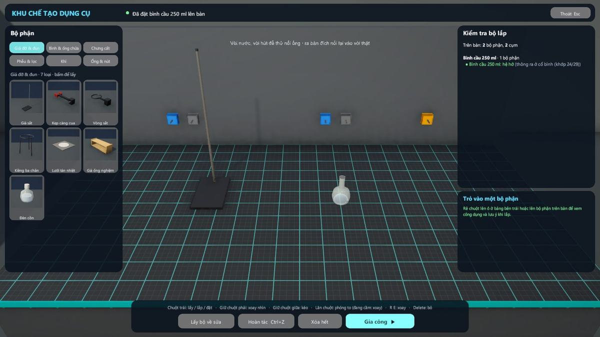
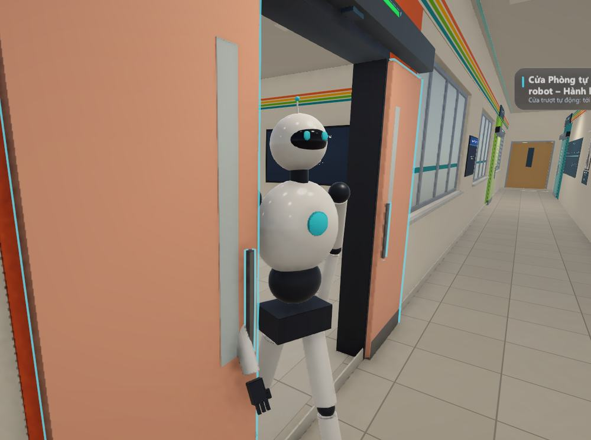
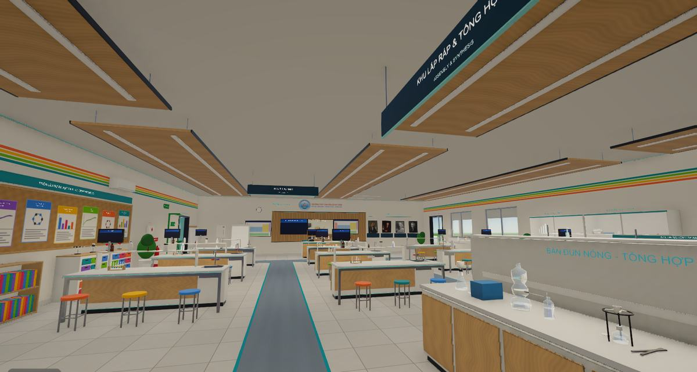
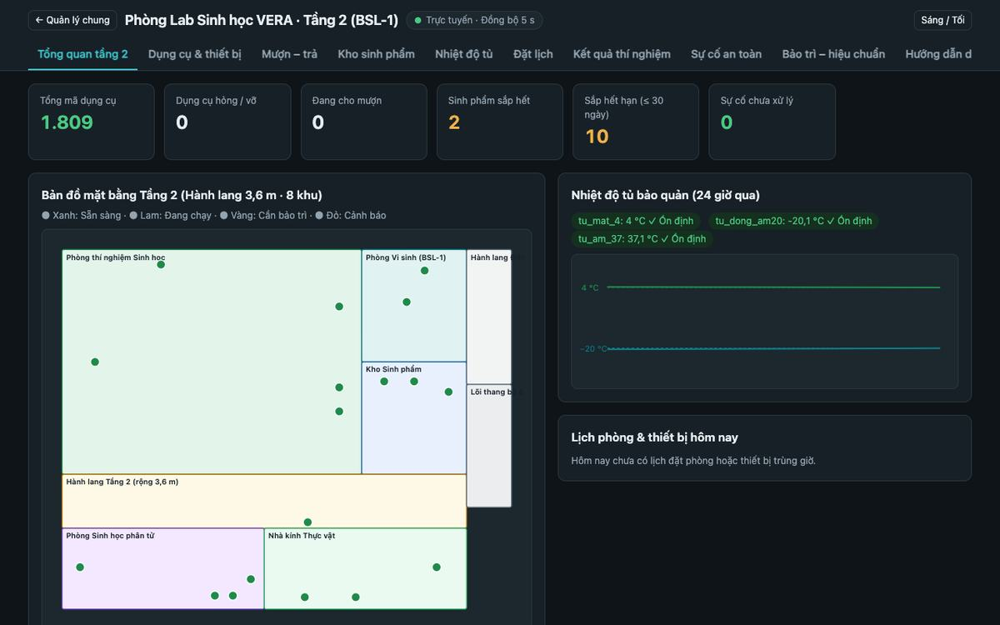

VERA Lab là dự án khoa học kỹ thuật của học sinh Trường THPT Chuyên Lê Quý Đôn, Gia Lai. Nhóm xây dựng một tòa nhà thí nghiệm ảo Hóa – Sinh tích hợp AI, chạy trên máy tính thông dụng, để học sinh tập trước và tập lại bên cạnh giờ thực hành thật.
Thanh tra ở Gia Lai ghi nhận trường thiếu phòng bộ môn, hóa chất để đến hết hạn
Cuối tháng 9/2026, Thanh tra tỉnh Gia Lai công bố kết luận tại 8 trường có cấp THPT. Theo VietnamPlus, một số trường còn thiếu phòng học bộ môn và nhân viên thiết bị. Trong phần nói về thiết bị, vật tư dạy học, bài báo cũng nêu hóa chất được cấp nhưng không dùng, để lâu đến hết hạn.1
Trước đó, hai kết luận khác tại 45 trường trong tỉnh ghi nhận tình trạng thiếu phòng chức năng và thiết bị dạy học.2
Nhóm nhận định: có vật tư chưa chắc đã có giờ thực hành. Còn cần người chuẩn bị và điều kiện tổ chức.
Cả nước còn thiếu hàng nghìn phòng học bộ môn ở cấp THPT
Một bài tổng hợp trên Tạp chí Thiết bị Giáo dục nêu: để thực hiện Chương trình Giáo dục phổ thông 2018, cấp THPT còn thiếu 5.328 phòng học bộ môn, thiết bị dạy học tối thiểu mới đáp ứng 58,9% nhu cầu.3
Ở Hà Tĩnh, đoàn giám sát của Ủy ban MTTQ tỉnh ghi nhận phòng thí nghiệm thực hành còn thiếu so với quy định.4
Số liệu thuộc năm học 2022–2023. Nhóm chưa tìm được số liệu toàn quốc mới hơn, cũng chưa có số liệu riêng cho phòng Hóa và Sinh.
Giáo viên muốn cho làm thí nghiệm nhiều hơn, nhưng vướng nhiều việc
Trong khảo sát 285 giảng viên và giáo viên Hóa ở nhiều tỉnh thành, chỉ 27,7% thường xuyên dùng thí nghiệm khi dạy bài mới. Trở ngại lớn nhất là không có cán bộ chuyên trách phòng thí nghiệm và chế độ đãi ngộ cho công tác thực hành. Nhiều ý kiến nêu thêm: ít kinh phí mua hóa chất, một phòng thực hành cho nhiều lớp, mất nhiều thời gian chuẩn bị và dọn dẹp.5
Ở Hà Nội, một khảo sát về dạy thực hành ghi nhận 72% trường THPT chưa có phòng thí nghiệm riêng. 98% giáo viên cho rằng cần tăng thời gian cho học sinh làm thí nghiệm, còn học sinh mong muốn nhất là được quan sát và tự làm nhiều thí nghiệm hơn.6
Khảo sát 285 giáo viên thực hiện qua phiếu trực tuyến. Khảo sát ở Hà Nội chỉ thuộc một địa phương. Cả hai không đại diện cho toàn quốc.
Làm thật cần được chuẩn bị, vì một thao tác sai có thể gây tai nạn
Báo Sài Gòn Giải Phóng điểm lại 3 vụ tai nạn liên quan đến giờ thí nghiệm, tổng cộng 8 học sinh bị thương: nổ ống nghiệm ở Nghệ An (2/2019), bỏng cồn ở Cần Thơ (1/2018) và nổ trong phòng thí nghiệm hóa ở Hà Nội (1/2017). Bài báo dẫn ý kiến cho rằng nguyên nhân đến từ sự chủ quan và thiếu giám sát quy trình.7
Giáo viên trong khảo sát năm 2021 cũng cho biết kỹ năng thực hành của học sinh còn yếu, thao tác có khi thiếu an toàn.5
Nhóm nhận định: điều này không có nghĩa nên tránh thí nghiệm thật. Học sinh cần một nơi để tập trước, nơi làm sai không ai bị thương.
Các vụ việc diễn ra từ 2017 đến 2019. Nhóm chưa có thống kê chung về tai nạn thí nghiệm ở trường học.
Một số trường đã tự tìm đến mô phỏng để bù chỗ thiếu
Thiếu thiết bị, một trường THPT ở Hà Giang cho học sinh thực hành nhiều bài qua mô phỏng.8 Một trường THPT ở Thừa Thiên - Huế dùng thiết bị ảo, mô phỏng trên máy tính để bù chỗ thiếu.9 Ba trường THCS ở TP Lào Cai thống nhất mỗi trường hoàn thiện ít nhất 10 thí nghiệm ảo, đồng thời báo cáo một số học liệu số không tương thích với máy tính của trường và khó cài đặt.10
Về hiệu quả, một phân tích tổng hợp quốc tế ghi nhận phòng thí nghiệm ảo có mức tác động trung bình tới kết quả học tập (g = 0,587).11 Ở Việt Nam, một nghiên cứu với sinh viên ngành Hóa cho thấy nhóm xem thêm VR hiểu rõ hơn các bộ phận của máy phân tích.12
Nhóm nhận định: nghiên cứu của Đại học Huế vẫn xem thí nghiệm thật giữ vai trò chính.5 Vì vậy công cụ ảo nên đi cùng giờ thực hành thật, cho học sinh tự thao tác và chạy được trên máy sẵn có.
Có thể xây dựng một phòng thí nghiệm ảo Hóa – Sinh chạy trên máy tính thông dụng, trong đó kết quả được tính từ chính thao tác của học sinh, để các em tập trước và tập lại khi điều kiện thực hành ở trường còn hạn chế không?
Mục tiêu của nhóm
Cho học sinh thực hành an toàn, lặp lại không giới hạn, không tốn hóa chất.
Cho học sinh làm quen quy trình vận hành của máy phân tích hiện đại.
Có trợ lý AI và robot hướng dẫn đúng theo quy trình của từng thiết bị.
Điều khiển tự nhiên hơn chuột và bàn phím, bằng webcam và tay cầm tự chế giá rẻ.
VERA Lab đưa không gian thí nghiệm lên máy tính để học sinh làm đi làm lại đến khi thành thạo. Chọn một tính năng để xem chi tiết.

Đi lại tự do như ở trường thật
Nhìn bằng góc nhìn thứ nhất, đi qua cửa tự động, lên tầng bằng cầu thang hoặc thang máy. Cần nhanh thì dịch chuyển thẳng tới từng trạm.

Tự tay làm thí nghiệm
Cầm dụng cụ, rót, pha, đun và quan sát hiện tượng. Ở lab Sinh, trong bình có gì do học sinh đưa vào, kết quả tính theo thành phần, nhiệt độ và thời gian.
16 bài thí nghiệm Sinh
720 hóa chất tra cứu được
Bám chương trình GDPT 2018

Dùng thử thiết bị hiện đại
Mỗi máy có màn hình vận hành riêng, chế độ Hướng dẫn và Thực hành. Học sinh làm quen với quy trình trước khi gặp máy thật.
Kính hiển vi điện tử
Máy PCR
Máy sắc ký khí
Máy nhiễu xạ tia X

Tự lắp bộ dụng cụ của riêng mình
Chọn trong khoảng 40 loại bộ phận và ghép lại trên giao diện 3D. Bộ dụng cụ xuất hiện ngay trên bàn thí nghiệm bạn chọn và chạy đúng theo cách bạn đã nối.

Trợ lý AI và robot luôn bên cạnh
Hỏi cách dùng máy, nhờ robot đi lấy hóa chất hoặc làm giúp một bước. Robot chỉ làm những bước đã qua kiểm tra an toàn.

Điều khiển bằng webcam, không cần kính VR
Quay đầu để nhìn quanh, ghé lại gần để phóng to, dùng cử chỉ tay để thao tác. Chuột và bàn phím vẫn dùng bình thường nếu bạn thích.

Trang web quản lý cho giáo viên
Xem kho hóa chất, thiết bị, lịch sử mượn trả và nhật ký thí nghiệm trên trình duyệt, cả ở khu Hóa và khu Sinh.
Từ cửa phòng tới kết quả, trong bốn bước
Vào phòng
Đi bộ trong tòa nhà hoặc dịch chuyển nhanh tới trạm cần làm.
Chuẩn bị
Tìm hóa chất, lấy dụng cụ, hoặc nhờ robot mang tới bàn.
Thực hành
Tự tay thao tác, hỏi trợ lý AI khi chưa rõ quy trình.
Xem kết quả
Kết quả tính theo đúng việc bạn đã làm. Sai thì làm lại, không mất gì.
Điểm mới và sáng tạo
1Mỗi lần làm là một kết quả riêng
Kết quả được tính từ đúng những gì bạn đã pha và thao tác, không phát lại video. Hai bạn làm khác nhau sẽ thấy kết quả khác nhau.
2Làm sai vẫn an toàn, và có hậu quả thật
Bỏ qua một bước trong quy trình thì thí nghiệm hỏng đúng như ngoài đời. Bài học nhớ lâu mà không ai gặp nguy hiểm.
3Tự do lắp ráp, không theo khuôn
Bạn tự chọn, tự nối, và bộ dụng cụ chạy đúng theo cách đã nối, kể cả khi nối sai.
4Robot AI có giới hạn an toàn
Robot nhận yêu cầu bằng lời và tự lập kế hoạch từng bước, nhưng mỗi bước phải qua bộ kiểm tra trước khi thực hiện.
5Nhập vai bằng thiết bị rẻ
Webcam thường đã đủ để quay đầu nhìn quanh, thêm tay cầm tự chế thay cho kính VR đắt tiền.
Các điểm trên là đặc điểm của hệ thống. Nhóm chưa khảo sát đối chiếu có hệ thống với các phần mềm thí nghiệm ảo khác.
VERA Lab dành cho ai
Học sinh
Làm thí nghiệm trước và sau giờ học, luyện tới khi thành thạo, thử cả thao tác sai để hiểu vì sao phải làm đúng.
Giáo viên
Minh họa những thí nghiệm khó tổ chức trên lớp, theo dõi kho, thiết bị và nhật ký qua trang web quản lý.
Nhà trường
Bổ sung trải nghiệm về thiết bị và kỹ thuật chưa có điều kiện trang bị. VERA Lab đi cùng giờ thực hành thật, không thay thế.
Tham quan
Hai tầng, mỗi khu một vai trò
Chọn tầng, rồi bấm vào từng phòng trên mô hình 3D để xem nơi đó có gì. Kéo sang ngang để xoay.
Bấm vào phòng để xem, kéo để xoay
Lab Hóa học
Từ bàn thí nghiệm của học sinh, kho hóa chất đến phòng máy phân tích, khu chế tạo dụng cụ và khu robot.
720hóa chất
14máy phân tích
40loại bộ phận lắp ráp
Lab Sinh học
Sáu khu chức năng, từ quan sát tế bào dưới kính hiển vi đến tách chiết ADN, nuôi cấy vi sinh và nhà kính thực vật.
108dụng cụ
16bài thí nghiệm
6khu chức năng
Quan sát tế bào
Khí khổng
Co nguyên sinh
Lên men
Quang hợp
Tách chiết ADN
Nhuộm Gram
Cấy vi sinh
PCR và điện di
Ghép gen
Những thứ không phải trường nào cũng có
HóaKính hiển vi điện tửNhìn cấu trúc rất nhỏ của mẫu
SinhMáy PCR và điện diKhuếch đại và quan sát ADN
HóaMáy sắc ký khíTách chất trong hỗn hợp
SinhTrạm ghép genTìm hiểu kỹ thuật di truyền
HóaMáy nhiễu xạ tia XNhận biết chất rắn trong mẫu
SinhKính hiển vi quang họcQuan sát tế bào, khí khổng
HóaNồi hấp tiệt trùngLàm đúng quy trình mới đạt
AIRobot hình ngườiTrợ lý làm theo yêu cầu bằng lời
Công nghệ
Bên dưới hệ thống
Chọn một chủ đề để xem VERA Lab hoạt động thế nào, từ cách tính kết quả đến tay cầm do nhóm tự thiết kế.
Năm lớp công nghệ làm nên VERA Lab
Mỗi lớp đảm nhận một việc riêng, nên có thể sửa và kiểm thử từng phần.
Không gian 3D
Tòa nhà hai tầng, chỉ tải phòng đang cần.
Unity 6, URP
Mô phỏng
Bộ máy tính kết quả từ thao tác của từng học sinh.
C#, có kiểm thử tự động
Trí tuệ nhân tạo
Trợ lý trả lời theo quy trình máy, robot lập kế hoạch có kiểm tra an toàn.
Python, FastAPI, nhiều nhà cung cấp AI
Điều khiển tự nhiên
Theo dõi đầu và tay qua webcam, tay cầm không dây tự chế.
MediaPipe, OpenCV, ESP32
Quản lý
Kho, thiết bị, nhật ký thí nghiệm trên trình duyệt.
Web, SQLite
Kết quả được tính, không phát lại video
Mô hình ở mức phục vụ dạy học: đúng về hiện tượng và gần đúng về số liệu trong phạm vi các bài.
Học sinh thao tác
Rót, pha, đun, nối dụng cụ theo cách của mình, đúng hay sai đều được.
Hệ thống ghi thành phần
Mỗi bình lưu có chất gì, bao nhiêu, ở nhiệt độ nào, trong bao lâu.
Mô hình tính hiện tượng
Phản ứng, màu sắc, bay hơi được tính từ đúng lượng và thứ tự học sinh đã làm.
Máy đọc mẫu của học sinh
Máy phân tích tính tín hiệu từ chính mẫu trong ống, mẫu pha sai sẽ ra kết quả sai.
Làm sai thì sao?
Nồi hấp không đuổi khí
Đồng hồ vẫn báo đủ áp, nhưng nhiệt độ không đủ nên mẫu không được tiệt trùng.
Bỏ enzyme ADN ligaza
Không có khuẩn lạc trắng, đúng như khi ghép gen thất bại ngoài đời.
Tách ADN thiếu cồn lạnh
Thiếu xà phòng, muối hoặc cồn lạnh thì không thu được sợi ADN.
AI đề xuất, bộ kiểm tra quyết định
Robot không tự do hành động theo mọi câu trả lời của AI.
Nhận yêu cầu bằng lời
Học sinh hỏi cách dùng máy hoặc nhờ robot làm một việc.
Đưa bối cảnh vào câu hỏi
Máy chủ thêm cảnh hiện tại và quy trình của thiết bị.
AI lập kế hoạch
Kết quả là các bước thuộc những kỹ năng robot có sẵn.
Bộ kiểm tra duyệt từng bước
Bước sai hoặc mất an toàn bị loại trước khi robot thực hiện.
Trong lab Sinh chỉ dùng chủng dạy học cấp an toàn thấp nhất (BSL-1), AI từ chối yêu cầu vượt mức này. Phần AI hiện cần kết nối mạng tới máy chủ.
Webcam thường thay cho kính VR
Quay đầu để xoay góc nhìn, ghé lại gần để phóng to, dùng cử chỉ tay để thao tác.
Đọc hình từ webcam
Chương trình Python đọc hình ảnh ngay trên máy.
Tìm điểm trên mặt và tay
MediaPipe tìm 478 điểm trên mặt và các điểm bàn tay.
Lọc rung
Bộ lọc One Euro làm chuyển động mượt hơn.
Gửi sang ứng dụng
Unity đổi các số này thành góc nhìn, độ phóng và cử chỉ.
Đang tải mô hình 3D…
Phần cứng tự thiết kế
Tay cầm VERA Arc
Tay cầm do nhóm tự thiết kế, để thao tác trong lab tự nhiên hơn chuột và bàn phím. Vòng tròn nhỏ ngả ra sau mang logo và chữ VERA LAB. Chén quanh joystick hình lục giác, cùng hình với logo.
81 × 71 × 123mm, cả vòng và cò
≈ 137 gcó pin, ước tính
8file STL để in 3D
Tháo rời
Thiết kế để in và tự lắp
Thân gồm hai nửa bắt vít, phù hợp để gửi xưởng in 3D. Pin thay từ đáy, đẩy nắp là mở, không cần tua vít. Có thanh móc dây đeo cổ tay ở đáy cán.
Bên trong
Linh kiện phổ thông, dễ mua
Mạch ESP32 truyền không dây, cảm biến chuyển động BMI160, joystick, cò bóp dùng cảm biến Hall, pin vuông 9V và mạch hạ áp MP1584. Bốn cổng mở rộng cho phép gắn thêm nút bấm hoặc cảm biến.
Trạng thái
Đã có gói in, chưa lắp thử
Đây là mô hình 3D của chính bản thiết kế dùng để in. Phần mềm kiểm tra va chạm trên mô hình đã đạt, nhưng nhóm chưa in thử, chưa cân thật và chưa viết xong phần mềm cho tay cầm.
Kiểm chứng
Đã kiểm tra gì, còn thiếu gì
Nhóm tách rõ ba việc: mô hình có tính đúng không, ứng dụng có chạy được trên máy thông dụng không, và học sinh có học tốt hơn không. Hai việc đầu đã đo, việc thứ ba chưa làm.
Đã đối chiếu
Mô hình tính đúng
Kết quả mô phỏng khớp đáp án và giá trị tham chiếu trong các bài đã đối chiếu.
Đã đo
Chạy trên laptop không có card rời
Đo bằng bản .exe trên laptop Intel Iris Xe, độ phân giải 1920 × 1080.
Chưa làm
Hiệu quả dạy học
Chưa khảo sát trên học sinh thật. Đây là việc đã có trong lộ trình của nhóm.
Kết quả mô phỏng so với giá trị đối chiếu
Số liệu lấy từ bài kiểm thử tự động. Bài kiểm thử thao tác đúng và cố ý thao tác sai, rồi đối chiếu kết quả.
Thí nghiệm
Kết quả mô phỏng
Giá trị đối chiếu
Nhiệt đốt cháy glucozơ
15570 J/g
15569 J/g (NIST)
Chuẩn độ giấm
0,8301 mol/L
0,8300 mol/L (đáp án)
Metanol trong rượu bằng GC-MS
1602 mg/L
1602 mg/L (đáp án)
Nung đá vôi ở 900 °C
còn 56,0 %
56,0 % (lý thuyết CaO)
Nồi hấp đúng quy trình
120,8 °C, giảm 8,5 bậc log
đạt tiệt trùng
Nồi hấp không đuổi khí
đồng hồ 1,05 bar nhưng chỉ 94 °C
không tiệt trùng
Các số này cho thấy mô hình tính đúng so với đáp án và giá trị tham chiếu, chưa phải đánh giá hiệu quả dạy học.
152bài kiểm thử Python đạt
147bài mô phỏng Hóa đạt
114bài mô phỏng Sinh đạt
Hiệu năng trên laptop thông dụng
Sau đợt tối ưu đồ họa, thời gian mỗi khung hình giảm 28–35%, hình ảnh gần như giữ nguyên.
Máy nguội60,1 → 82,0 FPS
Máy đã nóng34,6 → 53,2 FPS
Bản trước khi tối ưuBản hiện tại
Đo bằng bản .exe trên laptop Intel Iris Xe, 1920 × 1080, tắt giới hạn 60 FPS để so sánh. Khi dùng thật, ứng dụng dừng ở 60 FPS.
Hạn chế đã biết
Những điểm dưới đây nhóm nêu rõ để người xem đánh giá đúng phạm vi của dự án.
Mô phỏng ở mức dạy học: đúng hiện tượng, gần đúng về số, không thay cho phần mềm nghiên cứu.
Chưa khảo sát hiệu quả dạy học. Lab Sinh tự do hiện được kiểm thử bằng bàn tay tự động, chưa có người thật chơi thử.
Độ chính xác của theo dõi bằng webcam trên Windows chưa được kiểm chứng.
Máy PCR, điện di và ghép gen vẫn dùng luồng riêng, chưa nối với lab Sinh tự do.
Tay cầm VERA Arc mới có gói in, chưa in thử, chưa cân thật và chưa có phần mềm hoàn chỉnh.
Từng tầng, từng môn
Việc đã xong, việc đang làm và hướng phát triển tiếp theo.
Đã hoàn thành
Lab Hóa và lab Sinh
Tầng 1: phòng thí nghiệm, kho hóa chất, máy phân tích, khu chế tạo, robot
Tầng 2: phòng sinh học, vi sinh, sinh học phân tử, kho sinh phẩm, nhà kính
Trợ lý AI, điều khiển bằng webcam, trang web quản lý
Gói in 3D tay cầm VERA Arc
Đang làm
Thêm cách điều khiển, thêm nền tảng
In, lắp và viết phần mềm cho tay cầm VERA Arc
Bản cài cho macOS
Bàn lập trình khối lệnh ở phòng robot
Dự kiến
Học cùng nhau
Nhiều người cùng vào một phòng thí nghiệm
Hệ thống lớp học cho giáo viên và học sinh
AI chạy ngay trên máy
Dự kiến
Mở rộng và đánh giá
Tầng mới cho môn Vật lý
Hỗ trợ kính thực tế ảo
Khảo sát hiệu quả với học sinh tại trường
Điều bạn có thể muốn biết
Bấm vào từng câu để xem trả lời.
VERA Lab có thay thế giờ thực hành thật không?
Không. VERA Lab giúp học sinh chuẩn bị và ôn lại, còn kỹ năng cầm nắm ngoài đời vẫn cần giờ thực hành thật.
Kết quả thí nghiệm có chính xác không?
Mô phỏng ở mức phục vụ dạy học: đúng về hiện tượng và gần đúng về số liệu trong phạm vi các bài. Nhóm chạy kiểm thử tự động để đối chiếu với đáp án.
Có cần kính thực tế ảo không?
Không. VERA Lab chạy trên màn hình máy tính thường, điều khiển bằng chuột và bàn phím. Webcam và tay cầm là tùy chọn.
Có cần kết nối mạng không?
Phần trợ lý AI và robot lập kế hoạch cần kết nối tới máy chủ. Nhóm đang hướng tới AI chạy ngay trên máy.
Các thí nghiệm sinh học có an toàn không?
Trong ứng dụng chỉ dùng các chủng dạy học ở cấp an toàn thấp nhất, và trợ lý AI từ chối các yêu cầu vượt mức này.